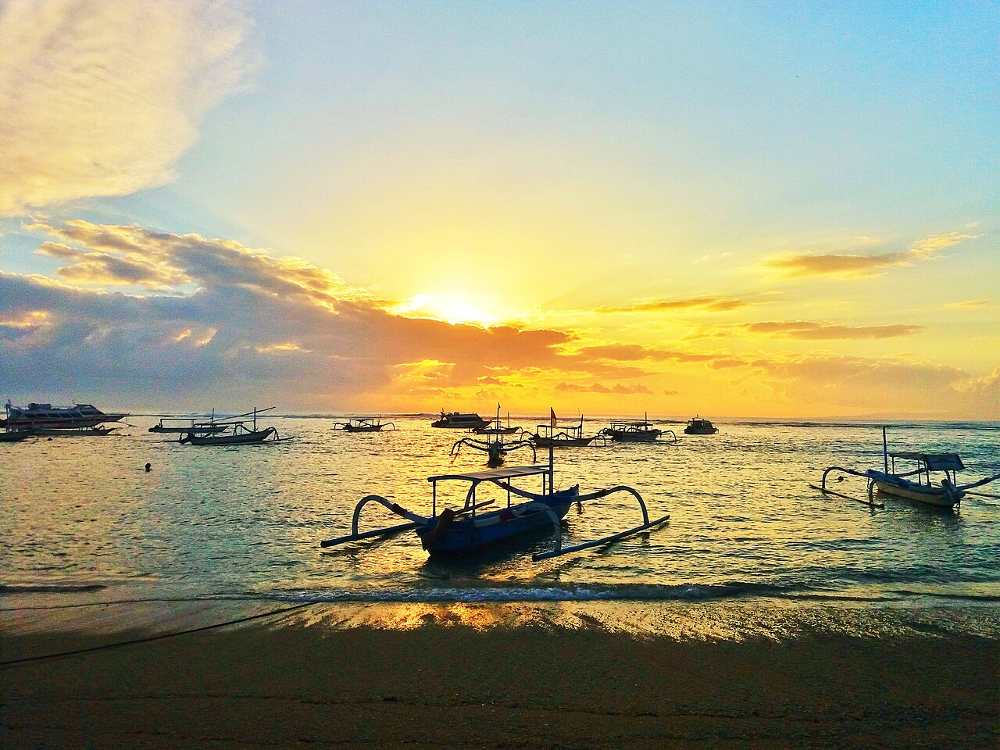
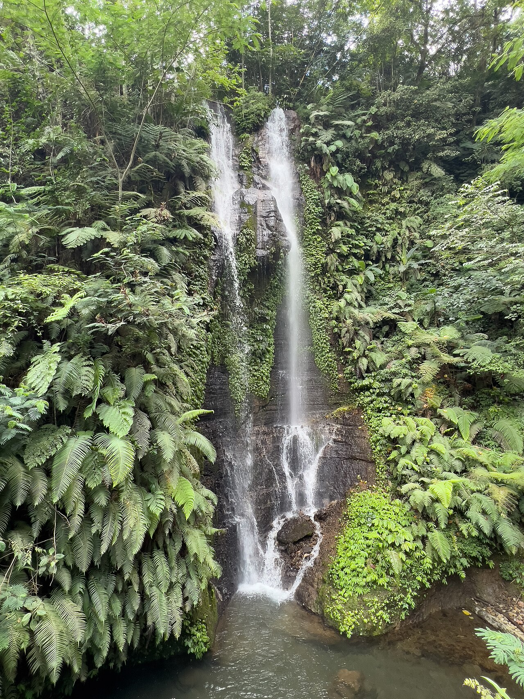
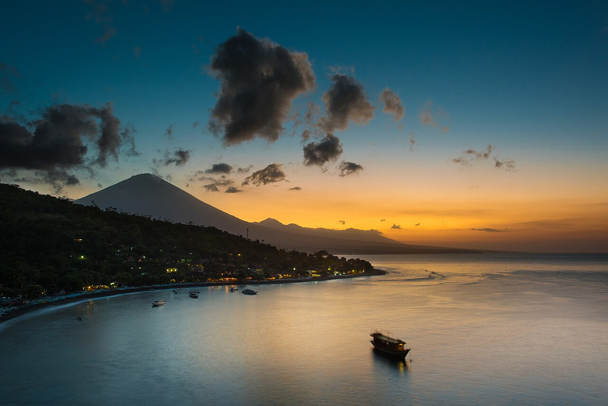
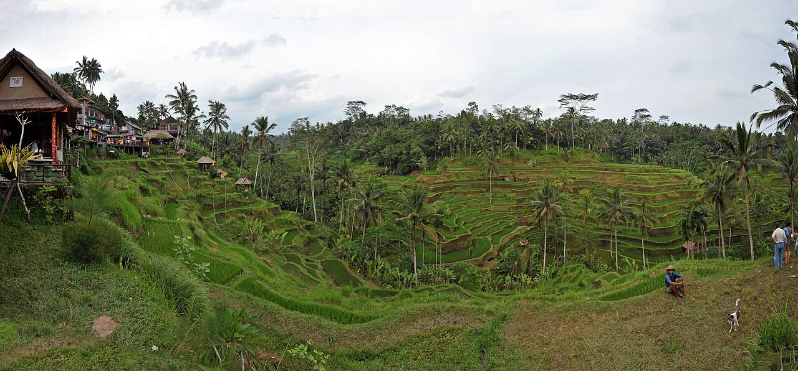
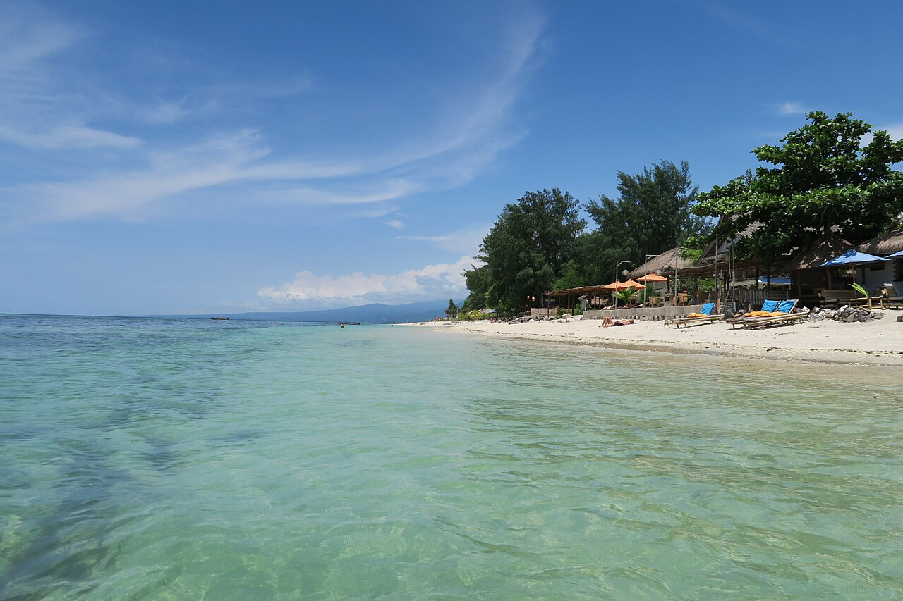
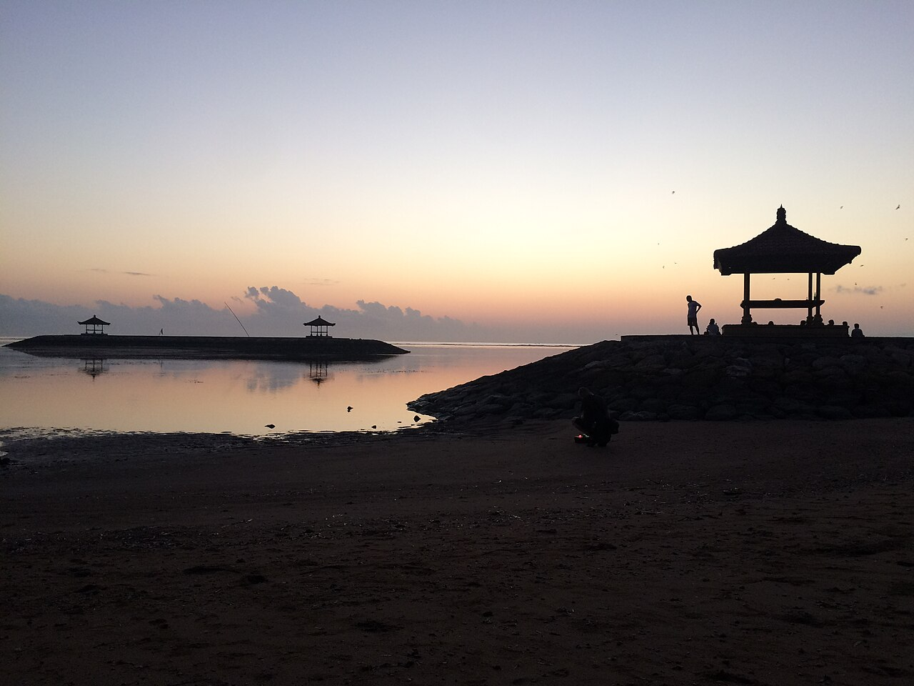

Sanur

Første møde med Bali
En blød landing ved havet
Vi samler familien i Sanur og får de første rolige dage ved strandpromenaden. Hotelnavn mangler stadig i planen.
2 nætter · hotel tilføjesVidere ind i højlandet
En rejse med hele klanen
Øliv, grønne bjerge og lange dage sammen på Bali.
Fra Københavns morgenlys til Balis varme aftener — her begynder vores fælles eventyr.
1.–2. juli · Af sted
Vi flyver fra København via Shanghai og lander i Denpasar sent om aftenen. Første stop: havluft og ro i Sanur.

Første møde med Bali
Vi samler familien i Sanur og får de første rolige dage ved strandpromenaden. Hotelnavn mangler stadig i planen.
2 nætter · hotel tilføjes
Vandfald · bjergluft · natur
Vi kører op i de køligere bjerge, hvor vandfald og grønne stier venter. Homestayen bliver vores base i Munduk.
3 nætter
Kystliv · snorkling · ro
En lille kystby med havet tæt på og udsigt mod Mount Agung. Her er der tid til snorkling, strand og afslapning.
4 nætter
Rismarker · jungle · kultur
På øen igen — denne gang blandt grønne rismarker, små butikker og junglestier. Måske bliver der også tid til rafting eller en god gang shopping.
3–4 nætter
Barfodsliv · hav · ø-dage
Ingen biler, turkisblåt vand og plads til at tage dagene, som de kommer. Vi sejler fra Padang Bai og finder vores egen lille rytme på Gili Air.
5–6 nætter
En sidste aften sammen
Vi runder af i Sanur med en sidste nat på Bali Wirasana, lidt ekstra tid til en gåtur eller et sidste kig i butikkerne.
1 nat22. juli 2027 · Hjemad
Fra Denpasar mod København — med en masse gode dage i bagagen. Forventet landing i CPH kl. 19.00.
Billederne er fra Wikimedia Commons og Flickr; fotograf og licens er angivet ved hvert billede. Billederne viser destinationerne, ikke nødvendigvis de konkrete hoteller.
Bisgaard-Klanen · Bali 2027
En praktisk oversigt over fly, overnatninger og båd. Flytiderne er lokale tider, og bookingreferencen er samlet her.